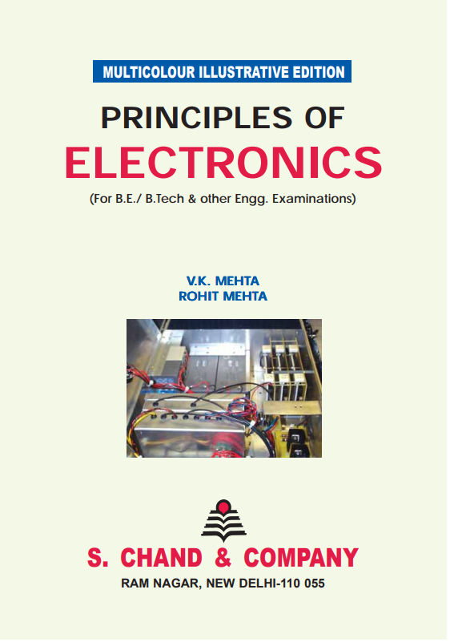
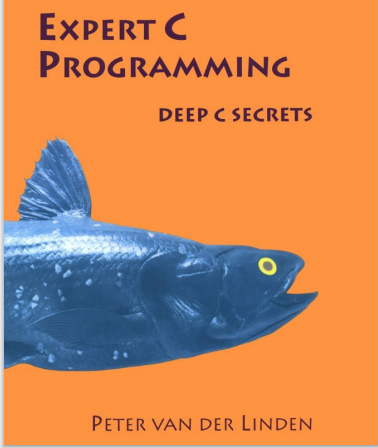
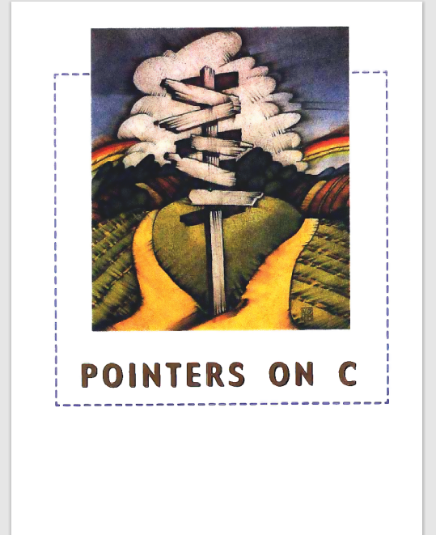
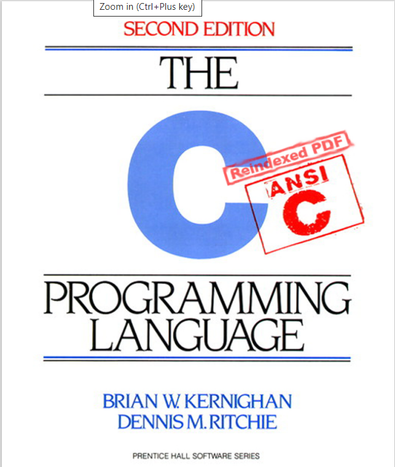
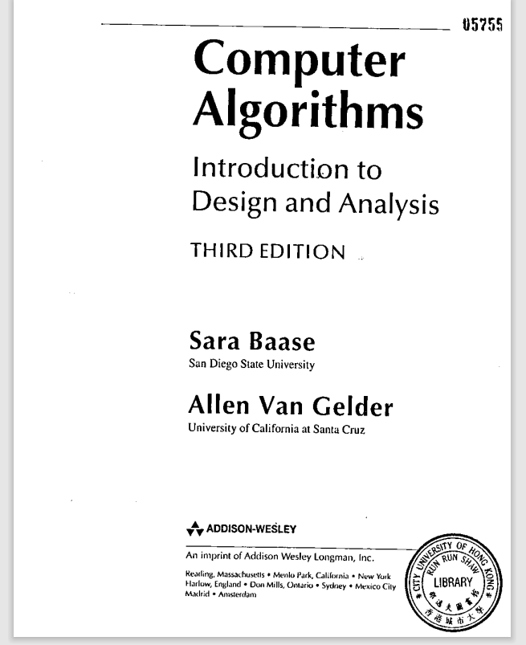

School of Technology Management and Engineering (STME).
Books related to engineering, recent innovations, technology, and management studies are available here
Database Management System(DBMS)
/image1.png)
/image4.png)
/image3.png)
Computer Orgainisation and Architecture(COA)
/image5.png)
Data Structure And Algorithm(DSA)

Formal Language And Automata Theory(FLAT)
/image7.png)
/image8.png)
/image9.png)
/image10.png)
Software Engineering(SE)
/image11.png)
/image12.png)
Software Design With UML


Operating Systems(OS)
/image19.png)
Fundamentals Of Economics(FE)

Operational Research (OR)
/image21.png)
/image22.png)
/image23.png)
/image24.png)
Principle Of Electronics(PEE)

Design & Analysis of Algorithm
   